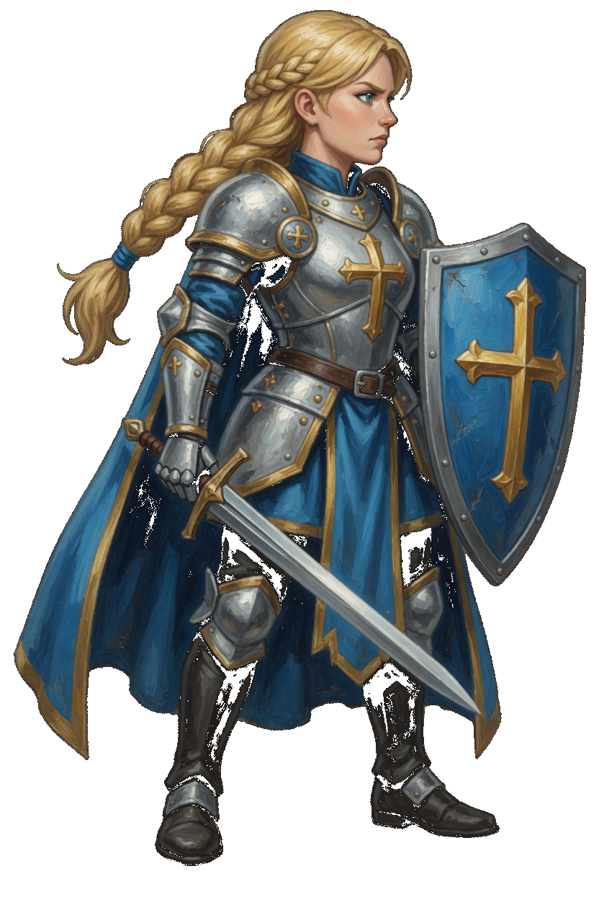
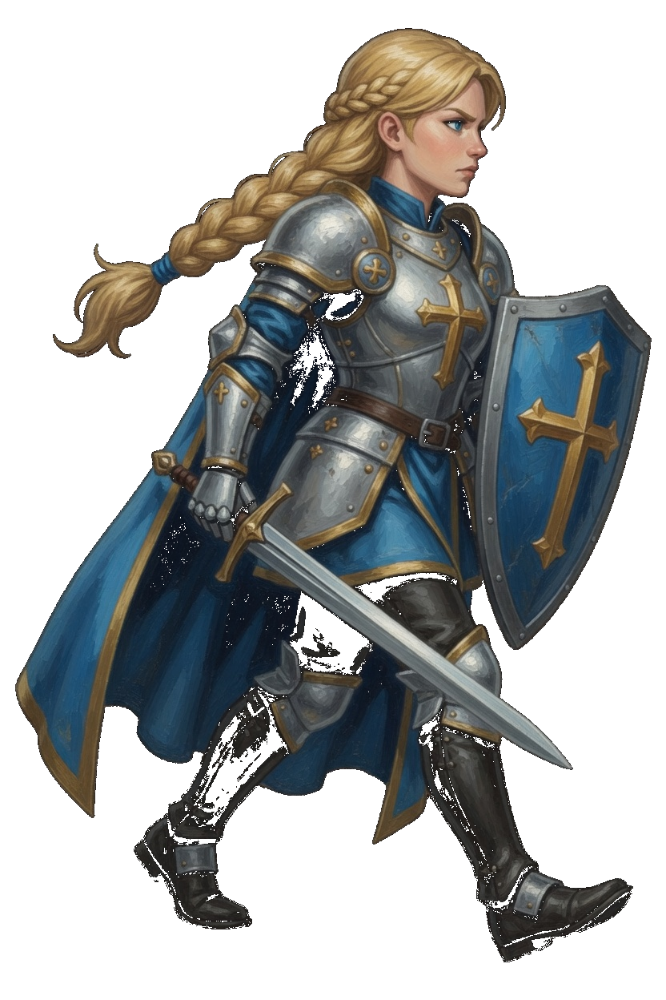
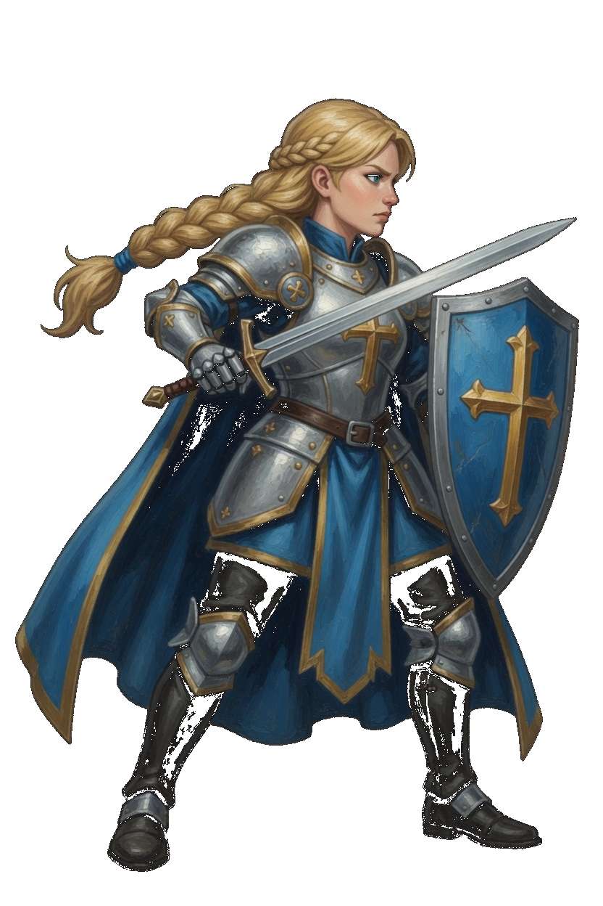
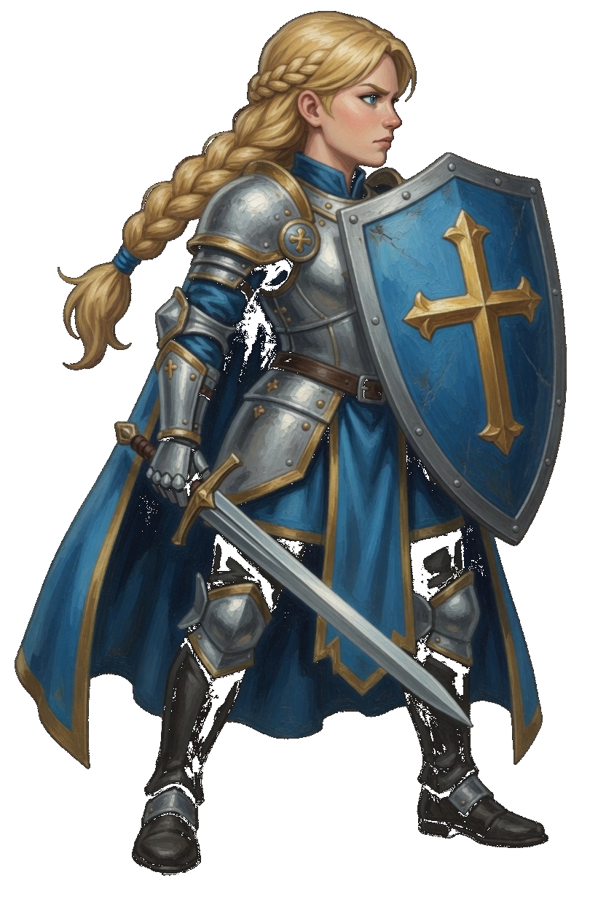
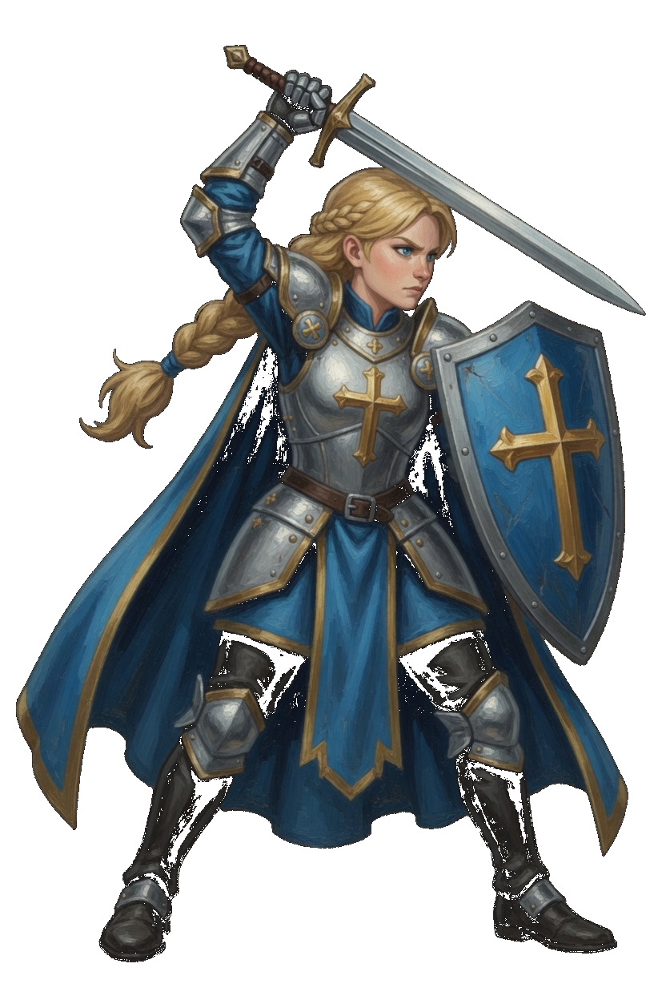
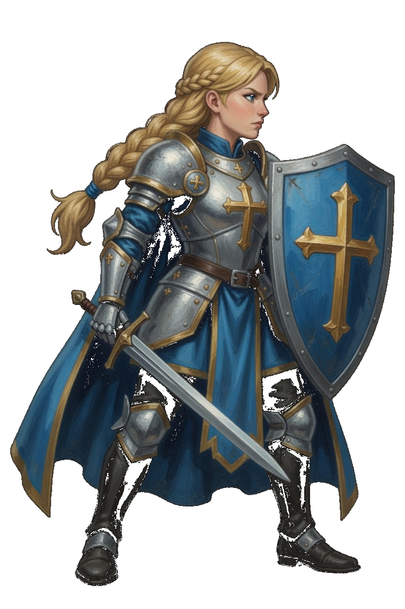
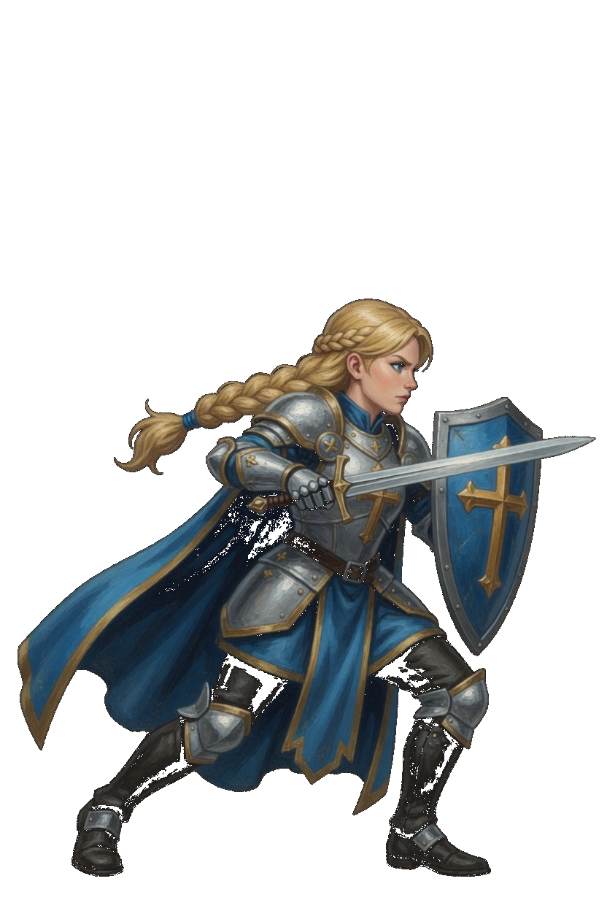
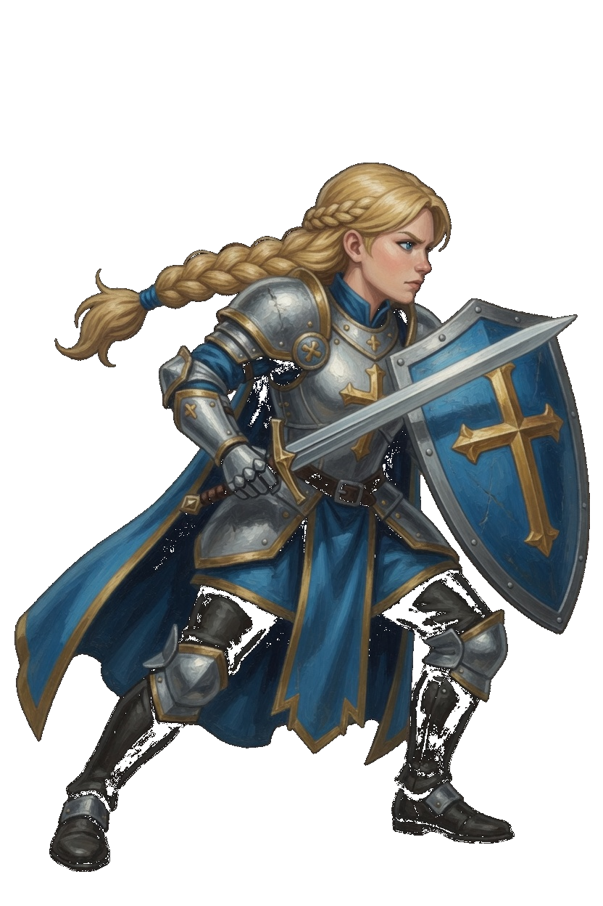
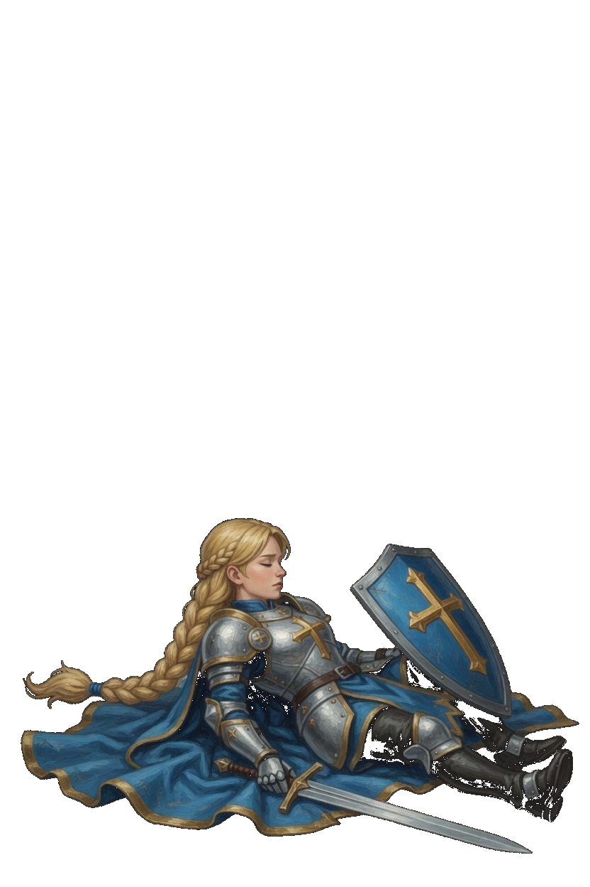
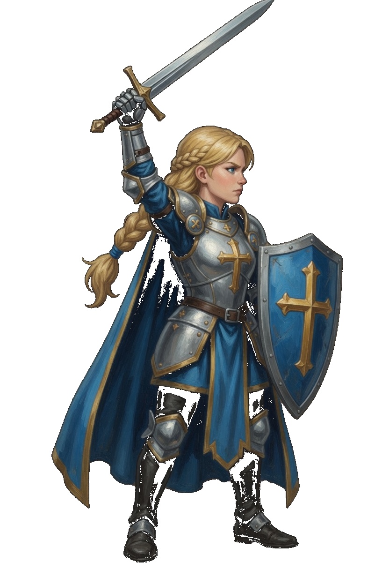

Justicae · Accord Knight
This card is the only pose list. A later frame has to match one of these keys. Native facing is right. The whole sprite flips. Silver plate, blue cape, blonde braid, gold cross on the breast, gold cross on the kite shield, sword in the other hand. She is a fist, so the corner step is Close. She has no move named Dash.
| Book | Value |
|---|---|
| Basic | Accord Blade · the sword · range 1.7 |
| Body | 1049 health · 27 damage · 0.74 attacks/s · speed 3.0 · armor 11 · range 1.7 · mana 90 · regen 6 |
| Crit / cooldown | 0.17 crit · 0.80 cooldown scale |
| Cards | Executioner · Bulwark · Thorns |
| Moves | Fair Plate · Verdict · Bulwark · Writ of Pursuit |
| Stride | Close · she is a fist · 30s · cost 8 |
What stays off the body
- Fair Plate is a pale ring while the thorns are up. The ring is not painted on the plate.
- Verdict is the overhead cut. The spark stays on the foe.
- Bulwark keeps that book name. The armor ring is the effect.
- Writ of Pursuit is the lean. The blink ring is the effect.
Keys

Shield forward, sword low, both boots planted. This frame opens Accord Blade, Fair Plate, Verdict, and Bulwark.

One stride. The right boot leads. Shield and sword stay in the hands. The fight clip is idle, then this stride.

A level cut toward the right. The shield stays up. Frame 1 and frame 3 are idle.

The shield braces across the chest. The sword stays low. Frame 1 is idle.

The sword comes down from overhead. The shield stays on the other arm. Frame 1 is idle.

The shield is held out. The sword stays back. Frame 1 is idle. The book name stays Bulwark.

The pursuit lean, sword reaching. Frame 2 is idle.

The corner step. Low, shield leading. Frame 2 is idle. There is no Slip key and no Dash key.

Down in the lower part of the canvas. Shield and sword stay with the body.

The sword is raised in a salute. The shield stays on the forward arm. Both boots are planted. This is not Verdict.